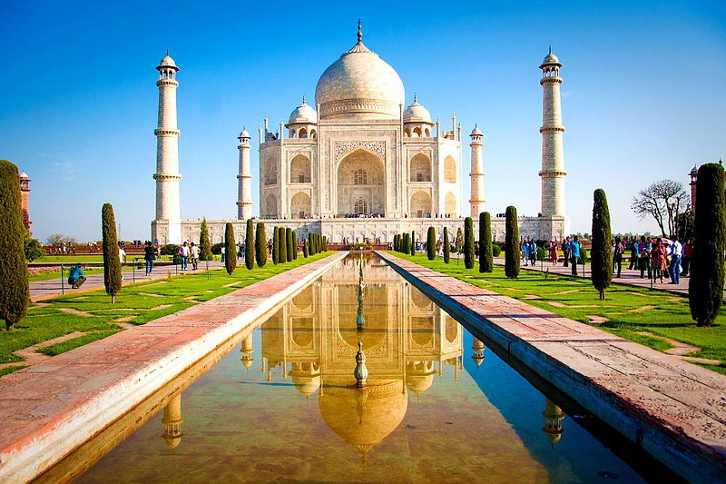

A Front-End Developer is responsible for developing new user-facing features, determining the structure and design of web pages, building reusable codes,
optimizing page loading times, and using a variety of markup languages to create the web pages.

The Taj Mahal is an ivory-white marble mausoleum on the south bank of the Yamuna river in the Indian city of Agra.
It was commissioned in 1632 by the Mughal emperor, Shah Jahan, to house the tomb of his favourite wife, Mumtaz Mahal.